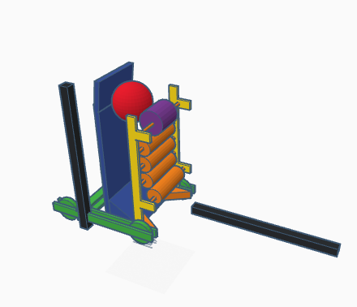

Robotics Page First week: 8/18-8/20: We introduced ourselves and started coding this website.
Second week: 8/22-8/26: We continued coding this website. We also went over the design process and looked at some examples. Loved brainstorming ideas.
Third week: 9/5-9/9: Amelia and I worked on a boat for our Wednesday Challenge. We started our first lab. The picture is the boat I built in 20 minutes.
Fourth week: 9/12-9/18: Started our Rube Goldberg Machine project. We had to included at least two simple machines. I am planning on using a pulley, inclined plane, and wedge.
Fifth week: 9/19-9/25: Started working on Rube Goldberg Machine. I am using cardboard, wood, a toy car, a baseball, some string, rubberbands, and tape to put together my project.
Sixth week: 9/26-10/2: Finished Rube Goldberg Machine. I'm happy wtih the result but I wish it was more consistent. It took about three trys for it to work properly.
Seventh week: 10/3-10/9: Researched Design Project a little bit and had an introduction to electronics.
Eigth week: 10/10-10/16: Continued electric engineering course and made some cool ciruits. I lights to turn on and off at random intervals also.
Ninth Week: 10/23-19-28: Continued to work on circuits.
Tenth week: 10/30-11/5: Worked on more circuits and soldered some circuit togther.
Eleventh week: 11/6-11/12: Researched design project. It must address real world problem I'm interested in. Mine will probably have to do with fuel consumption in cars or space travel.
Twelfth week: 11/13-19: Researched design project more, now researching fuel consumption. Decided on this because there's more resources, and it is relevant to everyday life.
Thirteenth week: 11/27-12/3: My design project will be an aerodynamic car, to reduce fuel consumption.
Fourteenth week: 12/4-12/10: Finished and tested bridges.
Winter Break!
1/8: Robotics Season Kickoff: Went over the game and reviewed constraints. (Not part of robotics class)
First Week new Semester: Reviewed game for First Robotics, came up with possible designs. I decided on a flyweel design with a front intake.

Second Week new Semester: Worked on our projects and did a Wednesday challenge. The challenge was to make a possible homemade promotional device for robotics team competitions. Anushka and I decided on wristbands with team number, 589 and the game name, Rapid React.
Third Week new Semester: Worked on our projects. I also worked on the CAD for the robotics team 589. I'm in charge of the intake.
Fourth Week new Semester: Worked on projects. We also started a new engineering type, bioengineering. It combines lots of different types of engineering, but I'm not really interested in it as much. The coolest part is prosthetics and biomimicry, copying animal parts for possible advantages.
Fifth Week new Semester: Worked on projects. We created a BoM (Bill of Materials). My budget was much bigger than I expected because of the fog machine's price.
Sixth week new semester: Worked on a new mini-project: the first letter of our name. I will use aluminum welded together to create a capital 'P'. I had to cut some pieces of metal again because my markings were not accurate enough. Next week we will finish welding them. I also worked a lot on the CAD for the robotics team this week. I ran into a lot of problems due to the fact that the space we could use was extremely limited.
Seventh week new semester: Worked on the new mini-project all week. Finished welding mine together and I grinded it down. I'm pretty satisfied with what I'v accomplished (picture). I'm also starting to finish up the CAD for the intake on the 589 robotics team.


 Eleventh week: 11/6-11/12: Researched design project. It must address real world problem I'm interested in. Mine will probably have to do with fuel consumption in cars or space travel.
Eleventh week: 11/6-11/12: Researched design project. It must address real world problem I'm interested in. Mine will probably have to do with fuel consumption in cars or space travel.